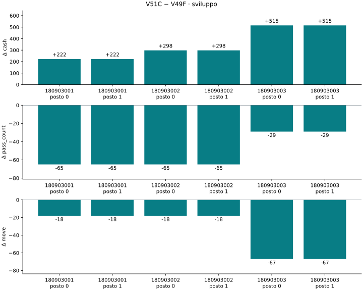
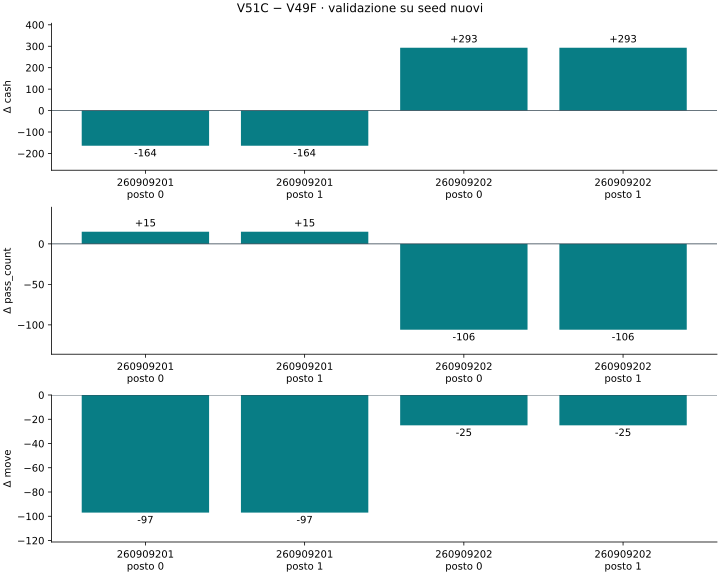

CANDIDATO LOCALE VERIFICATO — NON PUBBLICATO
Confronto con V49F congelata. Il giorno 29 i servizi necessari sono impegnati in percorsi completi, con riserve di risorse, irrigazione prima della raccolta e assunzioni dimensionate sulle visite residue. I giorni 1–28 restano identici nei replay di sviluppo verificati.
Validazione, differenze medie: cash +64.50, PASS -45.50, MOVE -61.00. Il seed 260909201 peggiora su cash e PASS; il beneficio medio dipende dal miglioramento sul secondo seed. I criteri restano quelli fissati prima della validazione.
| Seed | Posto | Δ cash | Δ PASS | Δ MOVE | Δ FEED | Δ HARVEST |
|---|---|---|---|---|---|---|
| 180903001 | 0 | +222.00 | -65.00 | -18.00 | +0.00 | +0.00 |
| 180903001 | 1 | +222.00 | -65.00 | -18.00 | +0.00 | +0.00 |
| 180903002 | 0 | +298.00 | -65.00 | -18.00 | +0.00 | +0.00 |
| 180903002 | 1 | +298.00 | -65.00 | -18.00 | +0.00 | +0.00 |
| 180903003 | 0 | +515.00 | -29.00 | -67.00 | +0.00 | +1.00 |
| 180903003 | 1 | +515.00 | -29.00 | -67.00 | +0.00 | +1.00 |
| Metrica | Differenza media |
|---|---|
| cash | +345.0000 |
| pass_count | -53.0000 |
| share | -0.5388 |
| slots | -100.6667 |
| move | -34.3333 |
| hire_cash | -329.0000 |
| FEED | +0.0000 |
| CARE | +0.0000 |
| WATER | +0.0000 |
| HARVEST | +0.3333 |
| losses | +0.0000 |
| escapes | +0.0000 |
| Criterio | Esito |
|---|---|
| complete | PASS |
| pass_absolute | PASS |
| pass_share | PASS |
| move | PASS |
| cash_mean | PASS |
| cash_cases | PASS |
| losses | PASS |
| escapes | PASS |
| services | PASS |
| obligations | PASS |

| Seed | Posto | Δ cash | Δ PASS | Δ MOVE | Δ FEED | Δ HARVEST |
|---|---|---|---|---|---|---|
| 260909201 | 0 | -164.00 | +15.00 | -97.00 | +0.00 | +0.00 |
| 260909201 | 1 | -164.00 | +15.00 | -97.00 | +0.00 | +0.00 |
| 260909202 | 0 | +293.00 | -106.00 | -25.00 | +0.00 | +0.00 |
| 260909202 | 1 | +293.00 | -106.00 | -25.00 | +0.00 | +0.00 |
| Metrica | Differenza media |
|---|---|
| cash | +64.5000 |
| pass_count | -45.5000 |
| share | -0.4023 |
| slots | -118.5000 |
| move | -61.0000 |
| hire_cash | -347.0000 |
| FEED | +0.0000 |
| CARE | +0.0000 |
| WATER | +0.0000 |
| HARVEST | +0.0000 |
| losses | +0.0000 |
| escapes | +0.0000 |
| Criterio | Esito |
|---|---|
| complete | PASS |
| pass_absolute | PASS |
| pass_share | PASS |
| move | PASS |
| cash_mean | PASS |
| cash_cases | PASS |
| losses | PASS |
| escapes | PASS |
| services | PASS |
| obligations | PASS |

| Seed | Posto | Chiamate | Massimo (s) | Overage (s) | Esito |
|---|---|---|---|---|---|
| 180903001 | 0 | 719 | 5.70 | 32.75 | PASS |
| 180903001 | 1 | 719 | 7.29 | 44.93 | PASS |
actTimeout=1 con budget di overage del motore: il massimo di una chiamata può superare un secondo. Prove seriali locali; nessuna equivalenza garantita con hardware Kaggle.
A è stata scartata per la perdita di irrigazioni prima della raccolta; B per l’aumento dei PASS. C corregge entrambi i problemi. I due posti e i seed possono produrre traiettorie correlate: questi confronti non sono una stima statistica indipendente né dimostrano un miglioramento del punteggio pubblico. Il packing è greedy e non dimostra ottimalità. Le attività facoltative restano affidate al controllore ereditato.
Le simulazioni comparative usano actTimeout=120 per separare la valutazione strategica dal runtime. Il file finale è stato controllato separatamente con il limite standard. Nessuna submission esterna effettuata.
SHA256 del bundle: 43d5c6c3b70cf2940afaa83f3a243cba75e52f89db459d31ecb96187c4f13fda
Risultati completi · Manifest del candidato · Protocollo · Riproduzione · Revisione A · Revisione B